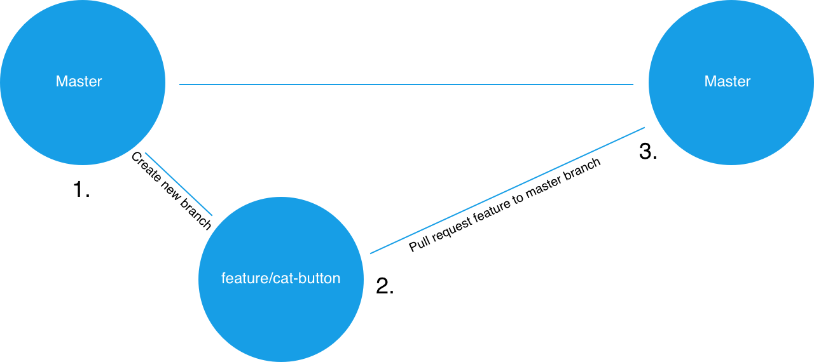

To Do's:
- Administrivia
- Project Goals and Requirements
- Git Workflows
- Brainstorm session
Administrivia
🛠 Welcome to Project Week! 🛠
This week will be a lot less pressure than even the review weeks we had. You'll be learning how to effectively collaborate and use the tools you have to make something really cool!
Be sure you sit in your groups today (makes sense, right?) as you'll be working on your project exclusively today and this week.
As briefly discussed in the past, we'll be using git's branching functionality to work on the same project simulatenously without stepping on each others' toes.
Project Goals and Requirements
For this project, you will need to complete a half page proposal to us by the end of the day. Feel free to just Slack the file to us so we can review your formalized plans.
To get to that point you'll have time today to research APIs, outline project ideas, submit those ideas for approval and do some initial design work. Next class will be hardcore development!
As a refresher, here are your complete requirements:
- Must use at least two APIs
- Must use AJAX to pull data
- Must utilize at least one new library or technology that we haven’t discussed
- Must have a polished frontend / UI
- Must meet good quality coding standards (indentation, scoping, naming)
- Must NOT use alerts, confirms, or prompts (look into modals!)
- Must have some sort of repeating element (table, columns, etc)
- Must use Bootstrap or Alternative CSS Framework
- Must be Deployed (GitHub Pages or Firebase)
- Must have User Input Validation
Presentation date: one week from this Saturday. Get hype.
Now, as for non-requirements, it would be nice to have:
- Use Firebase for persistent data (this is more or less a requirement. Plus, data persistence is cool as heck, so why not?)
- Mobile responsiveness: slip in some media queries, some nice flexbox/CSS grid layout changes, etc.
- Use an alternative CSS framework such as Materialize (material design is super hot right now!)
- Do something original and cool you can show off on your portfolio!
Project Presentation
Presentations are inescapable in the real world: it's something you gotta do. We'll be talking about how to present well, and how you can actually enjoy talking about your finish product in front of a group of people. This thing's gonna be 10min, and will be a formal presentation in which you'll detail:
- Application concept
- Motivation for development
- Design process
- Technologies used
- Quick demo
- Directions for future development
Please take this seriously. Oftentimes talking about what you did and how you did it is more important than the thing itself. Think about copy/pasting vs. explaining what you actually copied: what good is the final product if you don't know what it does?
Metrics
- Concept
- Design
- Functionality
- Collaboration
- Presentation
🏆 Awards 🏅
Yes, awards!
- Most Awe-Inspiring
- Most Useful
- Most Creative
- Best Use of Tech
- Best UI/UX
- Most Hilarious
- Most Disruptive
- Most Socially Conscious
API Suggestions
Stick to APIs that do all of the following:
- Allow CORS
- Simple/No authentication
- JSON response returned
- Well-documented
Tools
Not a comprehensive list, but let's talk about: GitHub Pull Requests, GitHub Issues, Trello, FreedCamp, many many many many more.
What do we want by the end of the day?
Half a page to a page proposal including:
- Project title
- Team memebers
- Project description
- Rough sketch (scanned paper, wireframe in software of choice, etc.)
- APIs to be used
- Rough breakdown of tasks
Questions?
Git Workflows
Time to make a shared repo and learn some cool stuff.
Group activity!
One group member should create a new Github repository. Don't worry about the project name now, this can always be changed later. Add your fellow group members as collaborators by:
- Going to the repo's main page and clicking "Settings"
- Selecting "Collaborators" menu item in the settings
- Inviting group members from "Collaborators" page by entering their GitHub usernames one by one
- Accept email from GitHub to be added to the repo
Cool! Now that everyone is on the same repo, we can talk about Pull Requests, which are basically the best. It's important to do code review for each other, combing through your group members' code to look for bugs or weirdness or possible conflicts before they get merged into the master branch.
Code review also helps group members who didn't write the code understand how it works, which is super, super useful.
Now, let's protect the master branch such that:
- Pushes to master are prohibited.
- Merges from other branches are not allowed without another team member's review.
As a general rule: don't push to master.
Seriously. Don't push to master on a shared repo.
Not even once.
Instead of just talking about it, let's protect the branch so that we couldn't even do this if we wanted to.
Group activity!
Protecting the master branch
Only one group member needs to do this.
Navigate back to the repo's "Settings" and select "Branches" from the left sidebar.
Under "Branch Protection Rules", select "master" from the dropdown.
You should be presented with some options, check off the following:
- Protect this branch
- Require pull request reviews before merging
- Include administrators
If completed successfully, no one should be able to push directly to the master branch. Instead, all changes must be made in the form of pull requests that are to be reviewed by another group member.
Branching
Right now, most—if not, all—of you have been pushing directly to master, overwriting whatever was in there previously.
For individual project owners? Not great, but not the end of the world.
For collaborative projects? This is bad. Really, really bad. I'm purposefully repeating this ad nauseum because it is seriously important. Based on what you've heard so far, why is pushing to master on a shared repo bad?
Let's be good about this.
Instructor activity...
I'll demonstrate some basic branching shortly. In fact, I can make changes in my notes repo on a new branch and then submit a pull request from the feature branch to master.
A pull request is a request to merge the diffs or changes from the source branch (the feature branch) to the target branch (master).
With the way your repos are set up now, another group member has to look at it to approve the pull request before its changes can be merged into master.
Once a feature branch has been merged into master, we delete it and then check back out to the master branch. From there, we'd check back out to a new feature branch and repeat the process for each feature we add.
Here's a decent diagram, and I can draw another if you'd like. Please ask plenty of questions.
Group activity!
Part I: Branching
You'll be using this time to create branches, submit pull requests, and perform code reviews before merging.
Only one group member should complete this section—others should observe.
Clone the project repo onto your computer and cd into it.
Run the following command in your terminal to create and checkout to a new branch:
git checkout -b create-html-skeleton
You should now be on a new branch named "create-html-skeleton". In order to verify this worked, run the following command in your terminal:
git branch
You should see two branches listed: master and create-html-skeleton. The create-html-skeleton branch should have an
asterisk to the left of it. This indicates that this is the branch you're currently on.
At the root of the repo, create a new file named index.html. Inside this file, add code for a basic HTML skeleton and save.
In your terminal, add and commit the changes. Then push up your code by running following in your terminal:
git push origin create-html-skeleton
This should push up your code to to GitHub on a branch with the same name (`create-html-skeleton`).
Go to the main repo page at github.com and you should see an button that says "Compare & pull request"—click this.
On the next screen, add a description of the work that was done in the textarea and click the "Pull Request" button.
If completed successfully, you should see the pull request listed under the repo's "Pull request" tab.
Part II: Reviewing a Pull Request
In this section we will review the pull request from Part I and merge it into master. A different project member should complete this section while others observe.
Clone the repo to your computer if you haven't already done so and cd into it.
First you will want to test the changes introduced by the add-html-skeleton branch locally.
In order to examine the new branch
on your local machine, run the following commands in your terminal:
git fetch git checkout -b add-html-skeleton origin/add-html-skeleton
This code should bring the copy of the add-html-skeleton branch that's on GitHub onto your computer.
Make sure this
worked by verifying that there's an index.html file in your local repo.
Normally, you'd run the code here to make sure everything works properly.
Check back out to your local master branch by running the following in your terminal:
git checkout master
Now go to your GitHub repo's main page and go to the "Pull request" section. Select the add-html-skeleton
pull request from the list.
At the next page select the option to see the "Files changed".
You should be presented with all of the files that were changed in this PR along with line numbers for any code added/removed.
If there are any changes you would like made, you can click the line number to leave a comment the PR author will see and should address before approval. Otherwise, click "Review changes" and approve the PR. You should be taken to a screen with an option to "Merge pull request"—click this button.
Once complete, you can delete the feature branch from your machine by running the following in your terminal:
git branch -D add-html-skeleton
Brainstorming Session
Now that you've had a little crash course in pull requests and branching, it's time to dedicate the rest of our class to brainstorming your project ideas as well as the things you'll implement, slowly building up to a complete project proposal.
We'll walk around and see what your initial ideas are, as well as talk about tech you can use.
Break time!
Brainstorming Session
We have a whole hour(!) to identify ideas, research APIs, and create project designs.
Again, we'll be coming around to touch base with y'all periodically, just to make sure you're on the right track.